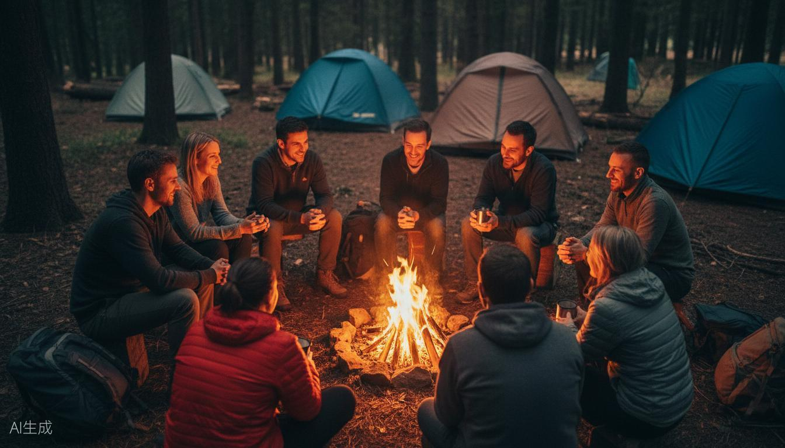

Via degli Dei
Bivacco, comunità, cammino
Cammino sulla Via degli Dei con bivacco nel bosco e visita a un ecovillaggio. Natura, convivenza e modi alternativi di vivere.
Cammini, ma non ti fermi mai?
Tanti passi, tanti chilometri, tante vette. Ma torni a casa con un fotoalbum, non con te stesso. La Via degli Dei non è una gara di km: è camminare lento, incontrare chi ha scelto di vivere diversamente, e scoprire che esistono altre strade.
Un giorno e una notte sul sentiero degli dèi
Partiamo nel pomeriggio dalla Futa. Camminiamo lungo il sentiero che da secoli unisce Bologna a Firenze, tra faggi, crinali e borghi di pietra.
Prima del tramonto arriviamo al campo. Montiamo le tende, accendiamo il fuoco. La sera ci scalda mentre mangiamo e condividiamo storie.
Il mattino dopo camminiamo fino a un ecovillaggio. Incontriamo chi ha scelto di vivere qui, e ci racconta perché ha lasciato tutto. E forse, per la prima volta, qualcuno ti dice che non sei pazzo per sentire quello che senti.
Torniamo a casa con le gambe stanche e qualcosa di diverso dentro.
La Via degli Dei
Il sentiero storico che collega Bologna a Firenze. Faggi, crinali, borghi di pietra. Un cammino che ha visto secoli di viandanti.
Bivacco nel bosco
Notte in tenda sotto le stelle. Il fuoco, i suoni della foresta, il silenzio che in città non esiste.
Visita ecovillaggio
Incontro con chi ha scelto di vivere diversamente. Storie concrete di chi ha lasciato tutto per un altro modo di abitare il mondo.
Gruppo intimo
8-12 persone che camminano insieme, mangiano insieme, dormono nel bosco insieme.

Un assaggio del cammino

Se ti riconosci in una di queste frasi
Ho sempre voluto fare la Via degli Dei, ma non da solo
Mi incuriosiscono gli ecovillaggi ma non saprei dove andare
Voglio un weekend di cammino, non di performance
Cerco qualcosa di più di un trekking
Mi piace camminare lento e osservare
Cosa non è
Non è un tour organizzato
Niente pullman, niente ristorante, niente programma rigidissimo. C'è un cammino e una condivisione.
Non è un pellegrinaggio spirituale
Nessuna promessa di illuminazione. Cammini, bivacchi, incontri persone vere con storie vere.
Non è una sfida fisica
Il ritmo è lento. Il punto non è arrivare in fretta, ma abitare il sentiero.
Quando camminiamo
Weekend di maggio
6 posti
Weekend di giugno
8 posti
Weekend di luglio
Apertura a breve
Gruppi di 8-12 persone.
Chi ha camminato sulla Via degli Dei
"Camminare lento e incontrare persone che vivono diversamente mi ha aperto un mondo."
Paolo, 39, Firenze
"L'ecovillaggio è stato il regalo più grande. Non sapevo esistessero persone così."
Silvia, 36, Bologna
Camminare la Via degli Dei con questo gruppo è stato diverso da ogni altro trekking. Il ritmo, le persone, la notte nel bosco.
Roberto
44, Modena
L'incontro con l'ecovillaggio mi ha fatto capire che esistono alternative concrete a come viviamo.
Chiara
32, Roma
Pronto a camminare?
Scrivimi su WhatsApp o lascia i tuoi dati. Ti rispondo io entro 24 ore.